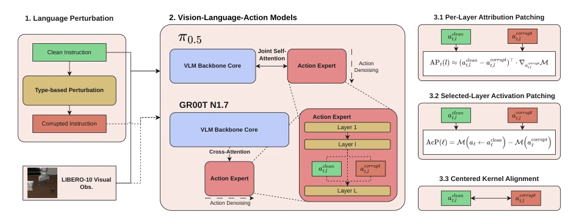
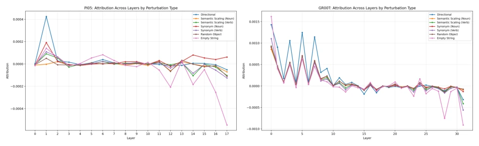
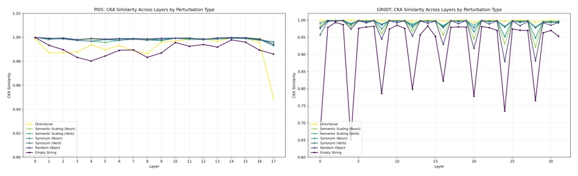
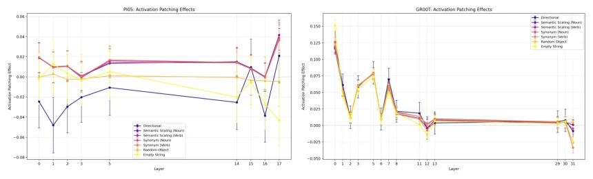
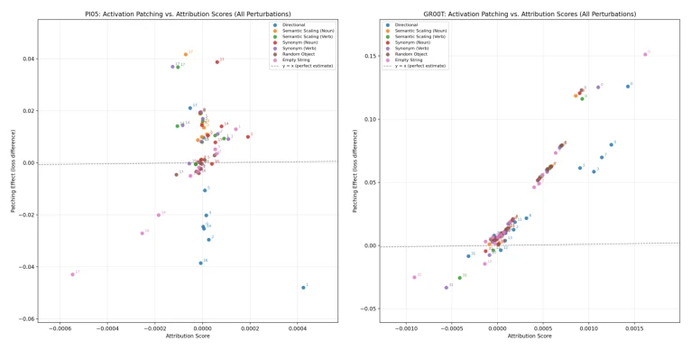

This paper opens a window into the "black box" of VLAs, but the window is somewhat narrow. Authors experimented with π0.5 and GR00T N1.7, finding models are more sensitive to "direction words" than "object words", even exhibiting the bizarre phenomenon of dissociation between causal effects and representational geometry. Although the method is rigorous, using synonym replacement as synthetic perturbation to test "understanding" is like testing the biting force of real teeth with dentures—it can measure reaction but not true semantic understanding. The conclusion is that language is indeed useful, but the model may have just memorized the position of direction words, rather than truly "understanding" the instructions. This dissociation phenomenon implies inconsistency between internal model computation and external behavior, which warrants caution. Furthermore, the reliability of Attribution Patching varies greatly across different models, reminding subsequent research not to blindly apply linear approximations. For GR00T, direction perturbations trigger large causal effects but small CKA changes, indicating the model is extremely sensitive to direction without changing deep representations; this "surface-sensitive, deep-stable" characteristic may bring safety hazards in embodied intelligence.
研究动机Motivation
具身智能部署需鲁棒性，但 VLAs 泛化背后的机制不明。现有研究如 Grant et al. [2026] 指出微调后的 VLA 策略可能本质上是“视觉主导”，语言仅在特定干预下才显现。然而，这未区分语言是真正驱动动作还是仅作为视觉的辅助线索。VLAs 缺乏显式接地模块，依赖 VLM 骨干的隐式能力，导致因果归因模糊。本文旨在填补实证性能与科学理解间的鸿沟，探究语言如何在动作专家内部被因果性地使用，而非仅仅评估任务成功率。此外，Wang et al. [2022] 在 NLP 中的发现未必直接迁移到具身领域，因为动作解码策略引入了特定模块。我们需要知道语言信息在残差流中何时被注入，以及扰动如何影响最终轨迹。当前工作忽略了语言扰动对动作生成的具体因果路径，仅关注任务成功率，无法揭示模型内部是否真正“理解”了指令的语义结构。
Embodied AI deployment requires robustness, but the mechanisms behind VLA generalization remain unclear. Existing research such as Grant et al. [2026] points out that fine-tuned VLA strategies may essentially be "vision-dominated", with language only appearing under specific interventions. However, this does not distinguish whether language truly drives actions or merely serves as an auxiliary cue for vision. VLAs lack explicit grounding modules, relying on implicit capabilities of the VLM backbone, leading to blurred causal attribution. This paper aims to fill the gap between empirical performance and scientific understanding, exploring how language is causally used within the action expert, rather than merely evaluating task success rates. Additionally, findings by Wang et al. [2022] in NLP may not directly transfer to the embodied domain, as action decoding strategies introduce specific modules. We need to know when language information is injected in the residual stream and how perturbations affect the final trajectory. Current work ignores the specific causal paths of language perturbations on action generation, focusing only on task success rates, unable to reveal whether the model truly "understands" the semantic structure of instructions internally.
The overall process is based on the LIBERO-10 dataset, constructing five types of language perturbations (synonyms, semantic scaling, direction, random objects, empty strings). The core adopts mechanistic interpretability techniques: performing Attribution Patching on the action expert residual stream to approximate causal effects, using Activation Patching to verify linear approximation bias, supplemented by CKA to measure representational geometry changes. The innovation lies in combining causal intervention with representational similarity, distinguishing two failure modes: "representation insensitive" and "representation shifted but behavior unchanged". Addressing the architectural differences between π0.5's shared attention and GR00T's cross-attention, locating the specific positions of language conditioning within Transformer layers respectively, and quantifying the causal contribution of language to action generation. Specifically, intervention points are selected after the Self-Attention output projection, isolating MLP influence, directly observing how language information propagates across layers. This method not only quantifies the importance of language but also reveals differences in language grounding locations under different architectures, providing a fine-grained perspective for understanding internal VLA computation.

Figure 1: Method Overview. We study how π0.5 and GR00T N1.7 process linguistic instructions during action decoding. (1) We corrupt the clean instructions following six different perturbation strategies. (2) We record the residual stream activations of both models during action decoding. (3) We analyse the causal and representational changes using attribution patching (3.1), activation patching (3.2), and Centered Kernel Alignment (3.3)
Using LIBERO-10 fine-tuned checkpoints, evaluation metrics are Flow Matching L2 loss and CKA similarity. Results show GR00T N1.7 is most sensitive to direction perturbations, concentrated in early periodic cross-attention layers; π0.5 is dispersed in early and specific later layers. Key findings are that in GR00T, direction perturbations trigger large causal effects but small CKA changes, indicating dissociation; π0.5's Attribution Patching reliability is low, with weak correlation to Activation Patching. Random object replacement has a small impact, indicating the model is insensitive to unseen objects. Under empty string prompts, the model still relies on vision, but the language path remains active in specific layers. This reveals the heterogeneity of language grounding mechanisms under different architectures, providing interpretability basis for future model design. Experiments also found that negative attribution may appear in later layers, implying the model possesses a self-repair mechanism.

Figure 2: Attribution effect per layer and perturbation type. Positive attribution indicates that the perturbation decreased the metric relative to the clean run, while negative attribution indicates an increase; larger magnitudes reflect a stronger causal effect of that layer on the model’s output.

Figure 3: Per-layer CKA between clean and perturbed representations, computed for each perturbation type. Lower CKA indicates greater representational divergence from the clean run.

Figure 4: Per-layer activation patching effect of selected layers.

Figure 5: Activation Patching effect plotted against attribution patching effect